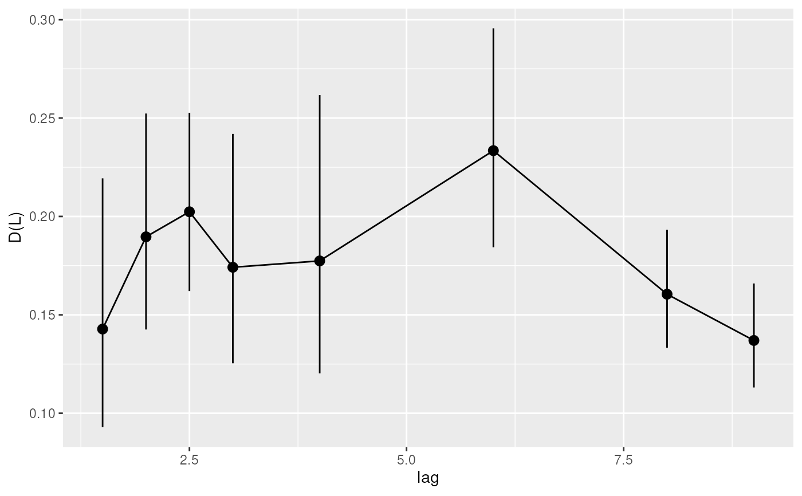
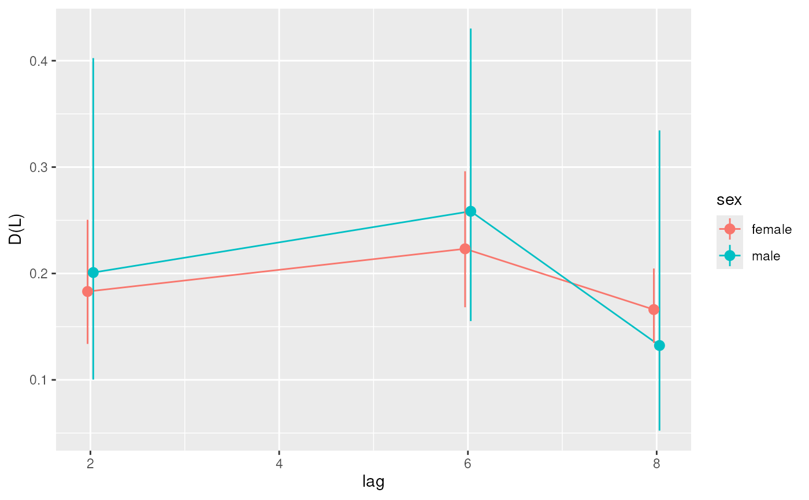

plotLagProfile() draws how far samples of the same subject are
apart at each time lag: the variogram \(D(L)\) with its confidence
interval, as stored by miaTime::addVariogram().
plotLagProfile(x, ...)
# S4 method for class 'SummarizedExperiment'
plotLagProfile(x, name = "variogram", colour.by = NULL, ...)a SummarizedExperiment
object.
additional arguments passed to
geom_pointrange.
Character scalar. Specifies the entry of
metadata(x) holding the variogram. (Default: "variogram")
Character scalar. Specifies the column of the
variogram that colours the estimates, such as the split.by
variable of addVariogram(). (Default: NULL)
A ggplot object.
Lags the design does not support (missing estimates) are dropped. With
split.by, only the estimates of each level are drawn, not the
ratios between levels, slightly shifted apart at each lag.
data("hitchip1006", package = "miaTime")
tse <- mia::transformAssay(hitchip1006, method = "hellinger")
# Squared Hellinger distance between samples of a subject L time units
# apart
tse <- miaTime::addVariogram(tse, time.col = "time", group = "subject",
assay.type = "hellinger", method = "euclidean", squared = TRUE,
time.lag = c(1.5, 2, 2.5, 3, 4, 6, 8, 9))
plotLagProfile(tse)

# The same for women and men
tse <- miaTime::addVariogram(tse, time.col = "time", group = "subject",
assay.type = "hellinger", method = "euclidean", squared = TRUE,
time.lag = c(2, 6, 8), split.by = "sex", name = "variogram_sex")
#> 37 samples with missing values in 'time', 'subject' or 'sex' were removed.
plotLagProfile(tse, name = "variogram_sex", colour.by = "sex")
